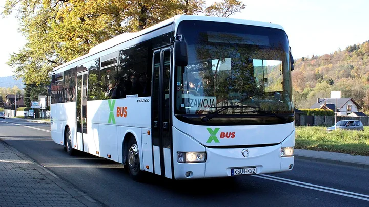

Tymczasowe wyłączenie przystanków w Gilowicach i Ślemieniu
Kilka dni utrudnień dla pasażerów ze Ślemienia i Gilowic w związku z zamknięciem drogi powiatowej.

Sucha Beskidzka, Maków Podhalański, Jordanów, Zawoja i dojazdy do Krakowa. Rozkłady prywatnych przewoźników w jednym miejscu, od 2017 roku.
Sprawdź odjazdyWybierz trasę, przystanek i dzień. Godziny w pionie, minuty obok, jak na kartce rozkładu na przystanku.
Każda trasa ma własną stronę z rozkładem, przystankami i przewoźnikiem. Zaznaczone trasy możesz otworzyć na tablicy powyżej.
Zamknięte przystanki, zmiany na święta, nowe i zawieszone linie. Najważniejsze komunikaty zawsze na górze.
Kilka dni utrudnień dla pasażerów ze Ślemienia i Gilowic w związku z zamknięciem drogi powiatowej.
Informacje przewoźników o kursowaniu busów w dniach 1-5 maja 2024 roku.
Mieszkańcy Bieńkówki i Jachówki zgłaszali godziny odjazdów niedopasowane do potrzeb uczniów.
Linia, z której w dni nauki szkolnej korzystali uczniowie szkół średnich w Suchej Beskidzkiej.
Baza firm przewozowych: dane kontaktowe, obsługiwane trasy i zdjęcia pojazdów, które robimy na trasach powiatu.
Zauważyłeś zmianę w rozkładzie, nowy bus na trasie albo zamknięty przystanek? Daj znać. Rozkłady powstają na podstawie informacji od przewoźników, ich stron i wydanych zezwoleń, a każde zgłoszenie od pasażerów pomaga utrzymać je aktualne.